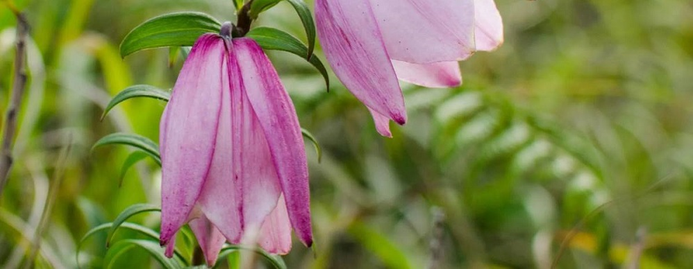
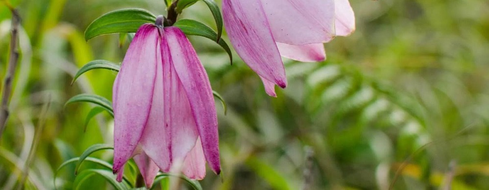
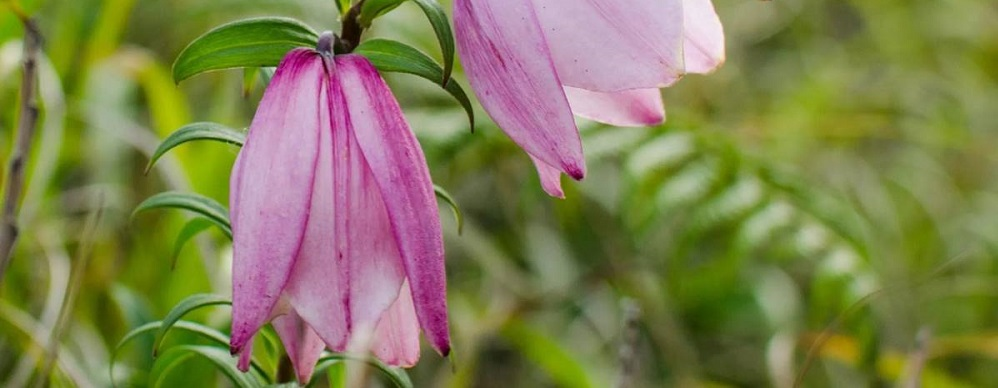
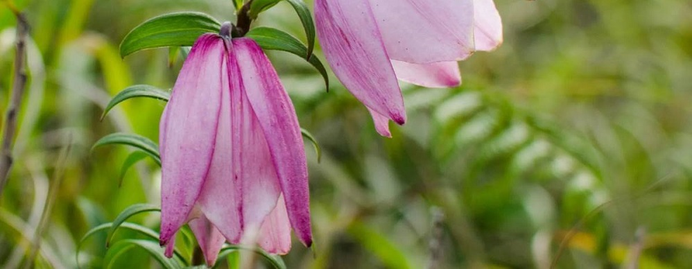

Manipur is a state in Northeast India, with the city of Imphal as its capital. It is bounded by the Indian states of Nagaland to the north, Mizoram to the south and Assam to the west. It also borders two regions of Myanmar, Sagaing Region to the east and Chin State to the south.
The state covers an area of 22,327 square kilometres (8,621 sq mi) and has a population of almost 3 million
Manipur has been at the crossroads of Asian economic and cultural exchange for more than 2,500 years. It connects the Indian subcontinent and Central Asia to Southeast Asia, East Asia, Siberia, regions in the Arctic, Micronesia and Polynesia enabling migration of people, cultures and religions.
Ruled by kings for over centuries, the ancient history of Manipur dates back to 33 A.D..The birthplace of Modern Polo, a land of exquisite culture and diverse ethnicity, the rich and vibrant past of Manipur still remains unexplored.
Manipur has both mountainous as well as plain regions with countless islands spread over the Loktak lake in the middle of the central bowl like plain.
Manipur is broadly divided into plain districts (Imphal East, Imphal West, Bishnupur, Jiribam, Kakching, Thoubal) and hill districts (Chandel, Churachandpur, Kamjong, Sadar Hills/Kangpokpi, Noney, Pherzawl, Senapati, Tamenglong, Tengnoupal, Ukhrul).
It is the place where one of the earliest human settlement in Manipur emerged - Andro, where there's a sacred fireplace burning continuously for the last couple of millennia (2000 years), through the dedicated efforts of the natives.
Ima Market, the world's only women run market, Imphal Polo Ground, the world's oldest pologround and Kangla, the ancient fortified capital city is in the middle of this district. Samban-Lei Sekpil, the world's tallest topiary plant, grows in this district. This district also has most of the administrative and official zones in Manipur.
Bishnupur district (Moirang, Thanga, Loktak lake) Loktak lake, the world's only floating lake, spreads her major portion in this district. It houses Keibul Lamjao National Park, the only floating national park in the world, which is the last natural habitat for Brow antlered deer (Cervus eldi eldi), the world's only dancing deer species. Thanga is the largest island in the lake, hosting numerous tourist destinations.
It is the meeting point of the Meitei culture and the rest of the Indian tradition. This district borders Assam in the west.
It is also known as the "Rice Bowl of Manipur" or "Granary of Manipur", for producing the highest level of grains, especially rice in Manipur. Kakching is the cleanest city in North East India. It has the highest literacy rate in Manipur.
The Anglo-Manipuri War Memorial Complex (popularly known as Khongjom War Memorial Complex) is the resting place of many freedom fighters and martyrs of Manipur.
Sirohi National Park is the world's only habitat for Shirui Lily (Lilium macklineae), the world's only terrestrial lily species.